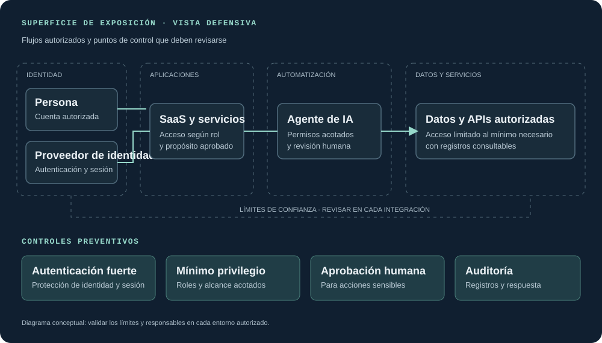
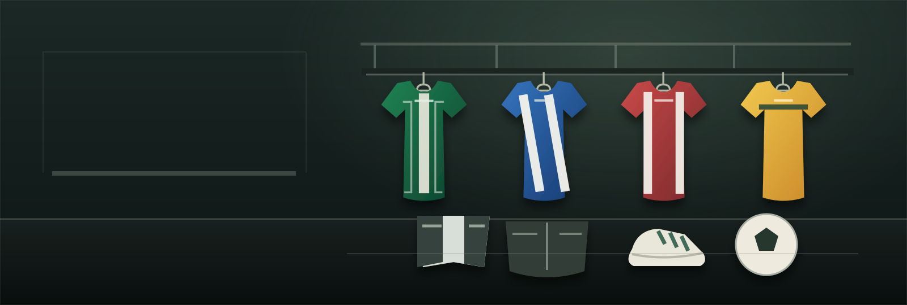

01 / PROYECTO
Sazu Accesorios
Tienda de accesorios · Demostración sin pagos reales
- HTML
- CSS
- JavaScript
02 — Proyectos
Reúno proyectos de ingeniería de software y un caso de estudio académico de ciberseguridad defensiva. En cada trabajo distingo el alcance, la evidencia disponible y los límites del análisis.
Estudio de caso · Módulo 02
Un ejercicio de análisis defensivo que organiza el escenario, los puntos de exposición y las medidas preventivas, sin presentar las afirmaciones del material de estudio como incidentes confirmados.
Análisis defensivo · Threat landscape
El estudio examina riesgos de identidad digital y permisos de agentes de IA. La documentación separa lo descrito en el material, lo que aún requiere validación y los controles propuestos.
Ejercicio académico · No es un informe forense
La prioridad es reducir exposición y mejorar la capacidad de revisión: limitar accesos, proteger las sesiones, exigir aprobación humana para acciones sensibles y conservar registros auditables.
Las fechas, atribuciones e impactos del material fuente no se publican como hechos: no se adjuntaron referencias primarias verificables ni telemetría del caso.

10 proyectos de ingeniería de software
En constante evolución.
Tienda de accesorios · Demostración sin pagos reales
Deporte, comida y bebidas
Comunidad e información sobre animales
Plataforma deportiva · Apuestas y premios ficticios
Repositorio de proyecto
Ver proyecto
Demo en revisión
Ver proyectoRepositorio de proyecto
Ver proyectoRepositorio de proyecto
Ver proyectoRepositorio de proyecto
Ver proyectoRepositorio de proyecto
Ver proyecto